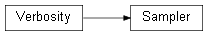

Class¶
-
class
Sampler(likelihood_script_file=None, likelihood=None, nwalkers=None, nsteps_required=None, moves_str=None, parallel_CPU=None, vectorize=None, output_folder=None, input_file=None, verbose=True)[source]¶ This class contains the Sampler object, which allows to perform Markov Chain Monte Carlo (MCMC) using the emcee package (ensemble sampling MCMC). See ref. [FMHLG13] for details about emcee. On top of performing MCMC
Samplerclass several methods to check convergence, and export theDataobject used to train and test the DNNLikelihood. The object can be instantiated both passing aLikobject or alikelihood_script_filecreated with theLik.save_scriptmethod.
Arguments summary
Argument |
Short description |
|---|---|
Attributes summary
Atrribute |
Short description |
|---|---|
|
|
Methods summary
Method |
Short description |
|---|---|
|
|
|
|
|
|
Inheritance diagram
